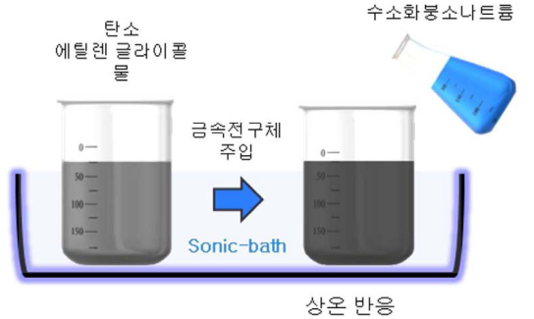
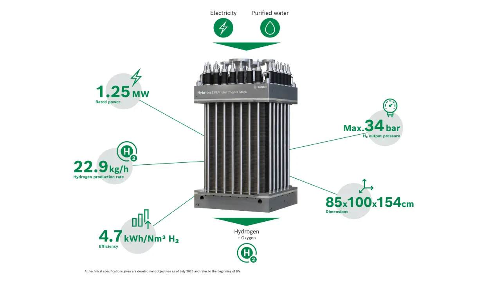
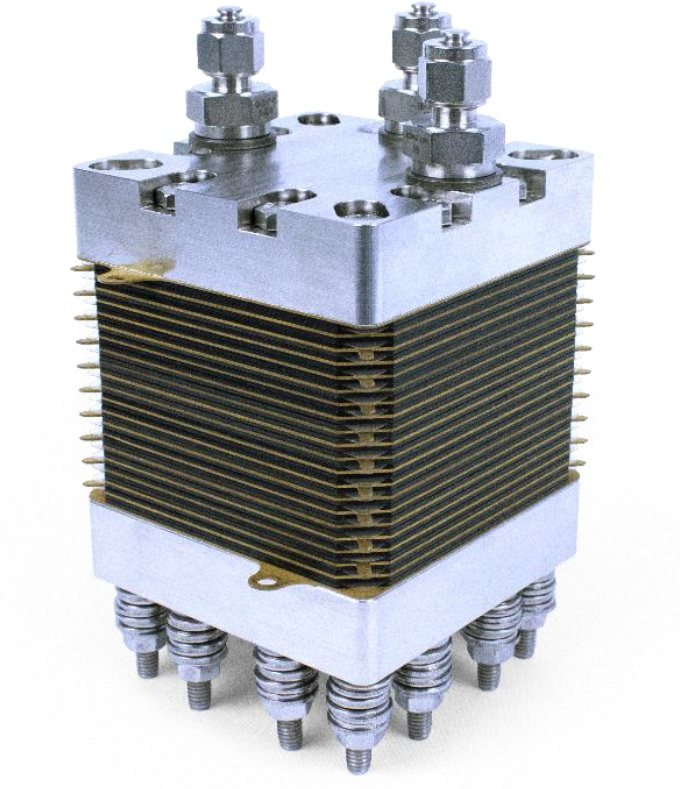

| 2026 차세대 전지 기술이전 유망기술 설명회 |
고성능 고내구성 수전해 담지 촉매
고결정성 탄소 기반 촉매·지지체·복합코팅 기술을 통합해 저과전압, 고내구성, 공정 확장성을 동시에 구현한 차세대 수전해 애노드 소재 패키지
기술활용영역 분류/활용 분야
| 대분류 | 중분류 | 소분류 |
|---|---|---|
| 친환경 에너지소재 | 그린수소 생산용 수전해 핵심소재 | 고결정성 탄소 기반 수전해 애노드 촉매·지지체 패키지 |
기술개요 및 개발배경
- 기존 수전해 전극은 고전위 산소발생반응(OER) 환경에서 탄소 부식, 촉매 응집 및 탈락, 귀금속 사용 부담, 복잡한 고온 공정 문제 동시 발생해 성능·수명·경제성 확보 난항
- 고결정성 탄소 지지체, Ti-O-C 앵커링, 전도성 금속산화물 코팅, LDH 활성층 설계를 결합하여 촉매 고정력, 내구성, 전기화학 성능, 공정 단순성 증가 목표로 개발
#고결정성 탄소
#LDH 촉매
#저과전압
#Ti-O-C 앵커링
기술내용 및 대표이미지
- 비귀금속 고활성 촉매, 고내구 하이브리드 지지체, 귀금속 고효율 복합촉매를 묶은 형태로, 수전해 애노드 소재를 고객 목적에 따라 고성능형·장수명형·고효율형으로 조합 제안할 수 있는 구조
- OER 평가에서 η10 230 mV 수준의 활성과 전도성 금속산화물 코팅을 통한 촉매 응집 억제와 과전압 저감 확인, 1M KOH 기반 Qir 시험과 단전지 평가에서 탄소 부식 저감 확인

기술 한계점 VS 개선점
[ 기존기술한계점 ]
- 일반 탄소 지지체는 수전해의 고전위 환경에서 장기 구동 안정성 확보 난항
- 고결정성 탄소는 촉매 담지 효율이 낮고, 금속산화물 지지체는 성능과 수명의 균형 달성 난해
[ 개발기술개선점 ]
- 고결정성 탄소 + Ti-O-C 결합 + 전도성 금속산화물 코팅 + LDH/귀금속 활성층을 조합해 촉매 고정력과 계면 안정성을 높이고 탄소 부식 억제
- 상온·단시간 공정과 앵커링 사이트 설계를 통해 저과전압, 응집 억제, 장기 내구성, 공정 확장성 동시 확보로 사업화에 장점
관련시장동향
- 한국 수소 생산 시장은 2024년 32억8,760만 달러에서 2033년 47억8,260만 달러로 성장 전망(CAGR 4.25%)이며, 수전해 기술 고도화가 핵심 성장동력으로 평가
- 정부는 2030년 25만 톤급 그린수소 생산 기반과 GW급 수전해 시스템 상용화를 추진 중이며, 수전해 설비 확산을 위한 제도 지원 병행 중
<IMARC Group>
Business Idea / 응용·적용분야
- 산업분야: 수전해/그린수소/전극소재/에너지플랜트
- 관련시장: AEMWE/PEMWE/수전해 스택 소재/수소생산 설비
- 적용가능한 제품: 애노드 촉매/촉매 코팅 전극(CCM)/수전해 MEA


사업화 제안 포인트
- 비귀금속 고활성형 + 고내구 지지체형 + 귀금속 고효율형의 포트폴리오 제안이 가능해 고객사 요구 수준에 따라 맞춤형 사업화 가능
- 기존 수전해 시스템 기업에는 기존 제품 성능 업그레이드 소재, 신규 진입 기업에는 애노드 핵심소재 라인업 확보용 패키지 기술
기술성숙도
1
2
3
4
5
6
7
8
9
TRL 5 : 확정된 공법/재료/시스템의 실험실 시제품 제작 및 성능 평가가완료된 단계
IP Portfolio
| 발명의 명칭 | 출원번호 | 출원일자 | 등록번호 | 등록일자 |
|---|---|---|---|---|
| 수전해용 전극촉매, 이를 포함하는 수전해 전지 및 이의 제조방법 | 10-2022-0111917 | 2022.09.05 | 10-2024-0171520 | 2024.12.09 |
| 고결정성 탄소 기반 수전해 촉매용 하이브리드 지지체 및 이를 포함하는 수전해용 촉매 복합체 | 10-2025-0055276 | 2025.04.28 | 미공개 | - |
| 수전해용 촉매, 이의 제조방법 및 이를 포함하는 수전해 전지 | 10-2025-0070330 | 2025.05.29 | 미공개 | - |
| 할로겐화 탄소 담지체 기반 고내구성 연료전지용 촉매의 제조 방법 | 10-2025-0129848 | 2025.09.11 | 미공개 | - |